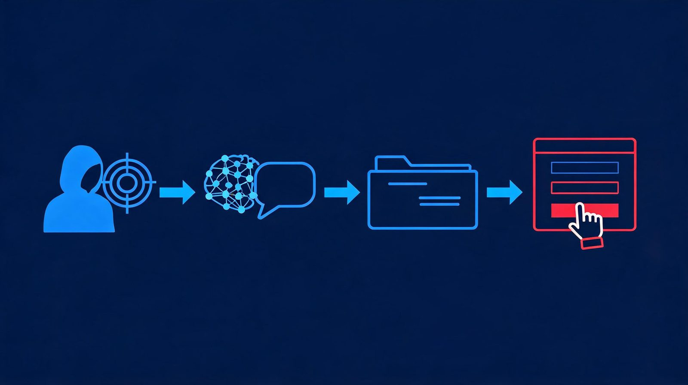
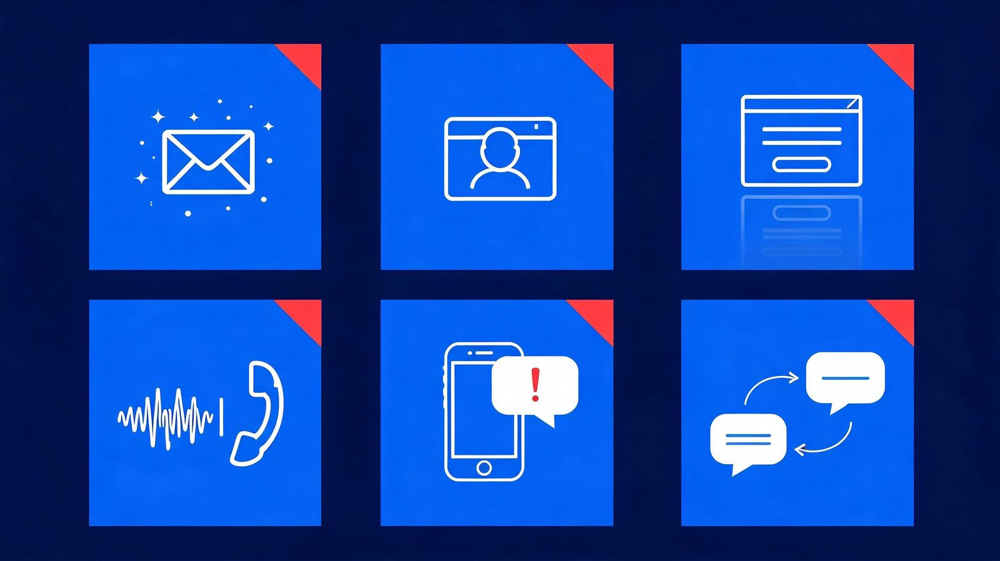
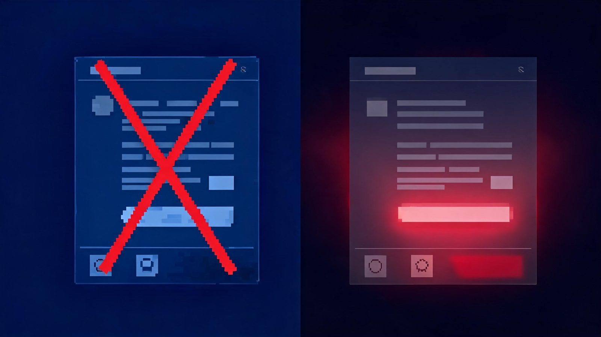
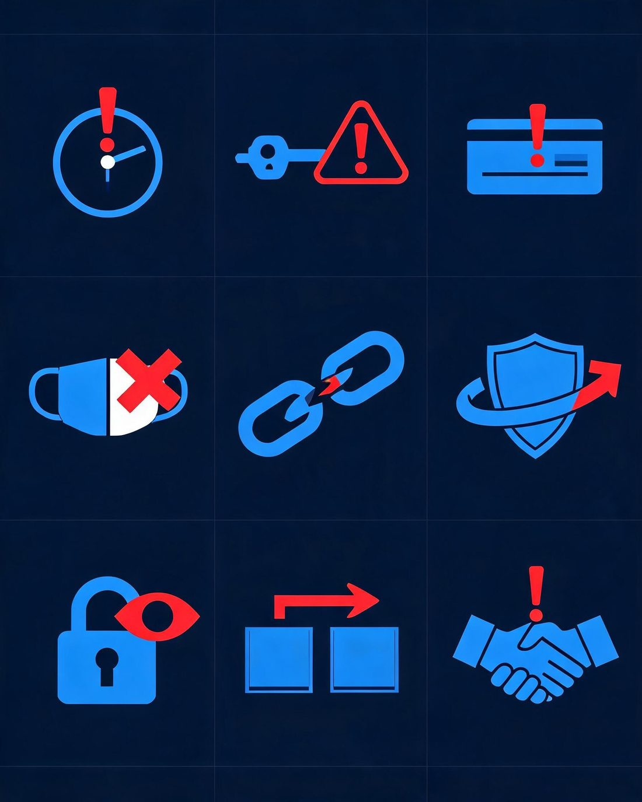
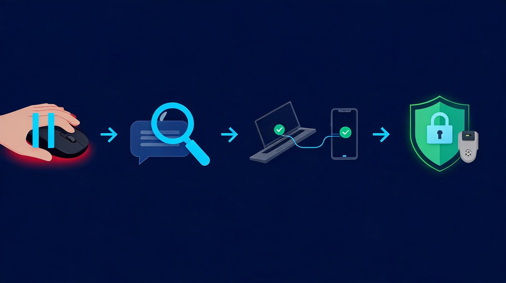
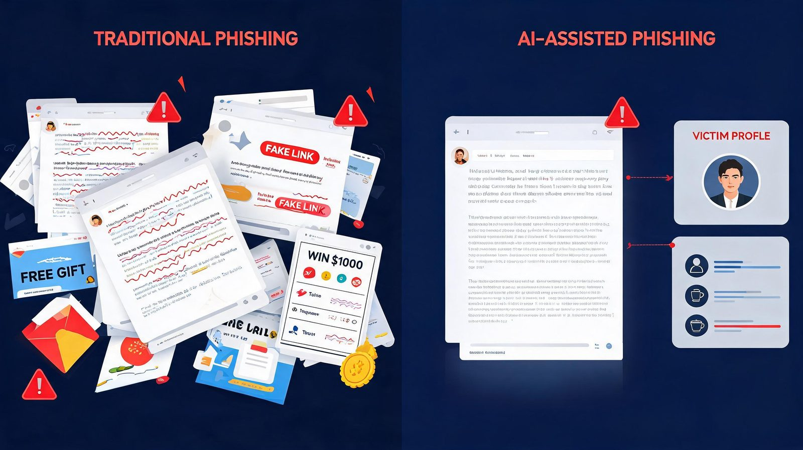
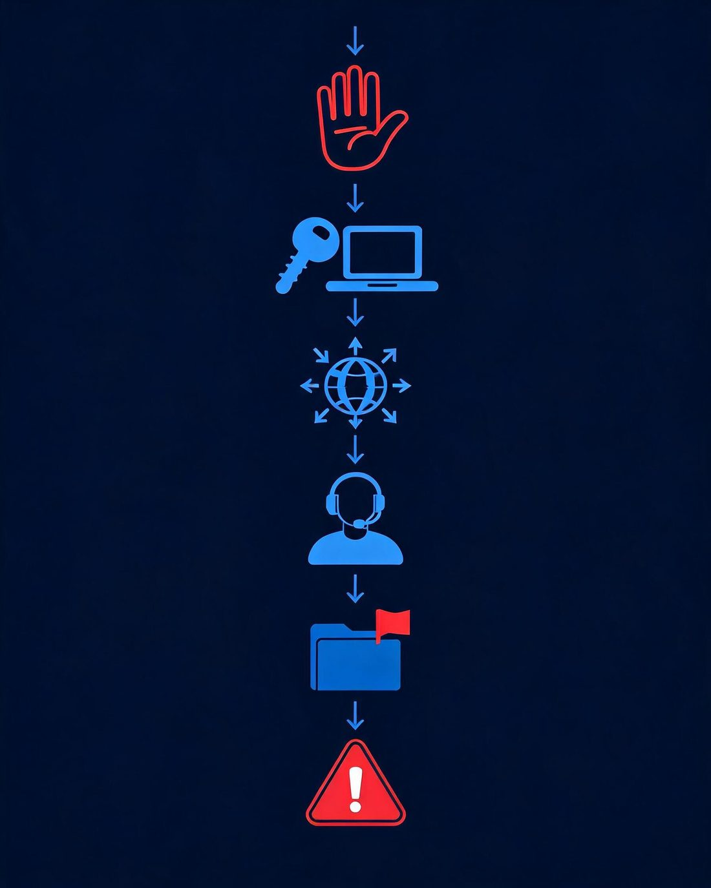
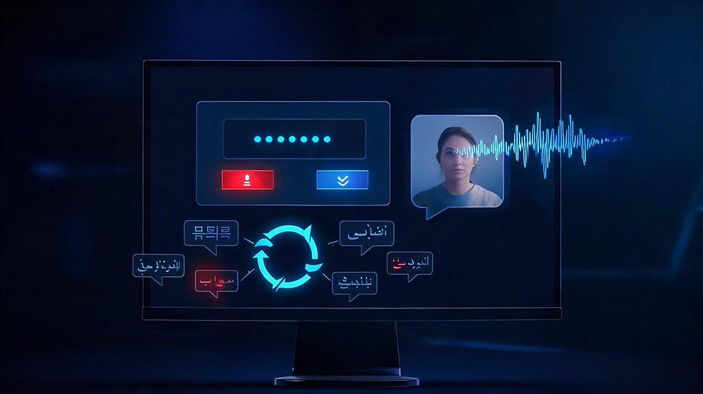

AI Phishing Attacks in 2026: How to Spot Them and Protect Yourself
By Veritya Daily Editorial Team · Updated September 2026 · 11 min read
AI-generated phishing messages can look exactly like the real thing — clean writing, familiar branding, and a plausible story.
Phishing used to be easier to spot. Many scam messages had bad grammar, awkward wording, or obviously fake links, and most security advice leaned on those signals. That advice is no longer enough on its own. Generative AI tools can now help attackers write clean, professional messages, imitate a company's tone, translate into any language, and personalize a scam using information scraped from public sources.
This guide explains what AI phishing attacks are, how they changed in 2026, which warning signs still work, and a simple four-step process — PAUSE → CHECK → VERIFY → PROTECT — you can use on any suspicious message, whether it arrives by email, text, phone call, or chat app.
🔑 Key Takeaway
The most important shift in 2026: stop asking "Does this message look fake?" and start asking "Should I trust this request, sender, link, and account?" Appearance is no longer a reliable test. Verification is.
The scale of the problem is well documented. Phishing — including voice phishing, SMS phishing, and fake sites — was the most commonly reported internet crime to the FBI's Internet Crime Complaint Center in 2025, with more than 241,000 complaints. Security awareness company Hoxhunt measured a 14× surge in AI-generated phishing attacks that bypassed email filters and reached inboxes in December 2025, a trend its analysts say continued into 2026. And in a controlled human-subject study, AI-personalized spear phishing emails achieved a click-through rate of roughly 54 percent.
AI phishing is a phishing attack that uses artificial intelligence tools at some stage of the attack — writing the message, researching the target, building a fake login page, cloning a voice, or holding an automated conversation. The goal is unchanged from traditional phishing: trick you into revealing credentials, approving a login or payment, or handing over money or data.
It helps to separate two things that often get blurred. The scam is social engineering: a stranger impersonating someone you trust to push you into an action. AI is the capability that makes the impersonation cheaper, faster, and more convincing. A phishing email with perfect grammar doesn't mean AI was used — but AI has removed the assumption that bad writing equals a scam.
A simple example: you get an email from what looks like your company's IT department. The logo is right, the formatting is clean, the tone matches their usual messages, and it references a real project from your team's public roadmap. It asks you to "re-authenticate" through a link before your access expires tonight. Every visible signal says legitimate. Only the request itself — an urgent credential handover through an unsolicited link — is the problem.

Anatomy of an AI phishing attack: the same social-engineering goal as ever, executed faster and personalized with AI assistance.
How AI Is Changing Phishing in 2026
AI hasn't invented a new crime — it has industrialized an old one. Security teams and researchers describe the same shift from multiple angles: attacks that are better written, better targeted, multilingual, and increasingly automated. Here are the six techniques that matter most in 2026.
241K+
phishing complaints to FBI IC3 in 2025 — the #1 most-reported internet crime
14×
surge in AI-generated phishing reaching inboxes (Hoxhunt, Dec 2025)
54%
click rate for AI-personalized spear phishing in a human trial (arXiv study)

Six AI-assisted phishing techniques: written lures, targeted spear phishing, fake pages, cloned voices, SMS scams, and automated chat.
AI-Written Phishing Emails
Language models can produce emails with correct grammar, a professional tone, company-style formatting, and natural localization into any language. Attackers use this to generate many variations of the same lure, so the "same email forwarded to everyone" pattern that filters look for breaks down. Replies can even be generated on demand when a victim asks questions — the conversation no longer has to be scripted in advance.
AI-Powered Spear Phishing
Spear phishing targets a specific person, and AI compresses the research phase. Public information — job titles, project names, conference talks, social posts — can be assembled into a message that references your actual work. Microsoft Threat Intelligence documented exactly this in an active 2026 campaign: AI-generated lures tailored to each victim's role, including themes like RFPs and business correspondence, delivering device-code phishing at scale with hundreds of fresh compromises per day since mid-March 2026.
⚠️ Red Flag
A message that knows a surprising amount about you is not automatically trustworthy. Attackers can harvest role details, projects, and org charts from public sources — a tailored message can be evidence against the sender, not for them.
AI Phishing Websites and Fake Login Pages
AI tooling can generate convincing fake websites and login pages that closely imitate legitimate services, removing the broken layouts and wrong logos that used to give phishing pages away. Combined with short-lived domains and link redirects, this means the page itself is a weak verification point. The safest habit is to reach login pages by typing the official address yourself or using a saved bookmark, never by following a link from a message.
Deepfake and Voice-Clone Phishing
Voice phishing ("vishing") now includes cloned voices. A few seconds of sampled audio from a podcast, video, or voicemail is enough for tools to synthesize a voice that sounds like a colleague, an executive, or a family member. Typical requests are urgent: an unexpected payment, a gift-card purchase, or approval of a login. The defense is procedural, not technical — hang up and call the person back on a number you already have.
AI Smishing
Smishing is phishing by SMS and messaging apps, and AI assists here too — cleaner text, localized phrasing, and convincing impersonation of delivery companies, banks, and government services. SMS feels more personal than email, which makes the "surprise + urgency + link" pattern even more effective. Treat unexpected texts with links the same way you'd treat a suspicious email.
Automated Social Engineering
AI agents can now carry parts of the attack themselves. Google's Threat Intelligence Group has tracked threat actors using AI for information gathering and highly realistic phishing campaigns, and in Q2 2026 it observed an attack where an actor compromised cloud infrastructure to plan and execute an agent-enabled mass credential-harvesting operation. As more organizations deploy AI assistants — a trend visible in AI adoption statistics — attackers probe those systems too, a problem we covered in AI agent security.
Why AI Phishing Is Harder to Spot
The old signals are failing for a simple reason: they were proxies for carelessness, and AI removes the carelessness. Perfect grammar, professional formatting, correct branding, personalized details, and a plausible story are all within reach of a motivated attacker — no technical skills required.

The uncomfortable truth of 2026: the more polished the message, the more you should lean on verification instead of appearance.
Two recent data points show how far impersonation has spread. In Check Point's Q2 2026 Brand Phishing Report, Microsoft was the most-impersonated brand at 23 percent of attempts — and ChatGPT entered the top 10 most-impersonated brands for the first time, complete with a fake "payment failed" email campaign. When the scams impersonating AI brands are themselves AI-written, "it looks official" tells you nothing. Proofpoint's 2026 research in India adds a human-data angle: 42 percent of surveyed Indian organizations said employees had trusted AI-powered attacks.
To be clear: grammar isn't useless. A message full of errors is still a warning sign. The point is that clean writing is no longer evidence of legitimacy — it's the baseline. What still works is checking the request, the sender's domain, the link's real destination, and the story itself against an independent source.
9 AI Phishing Warning Signs to Watch For
Since appearance no longer separates real from fake, behavioral and contextual signals do the work. These nine warning signs apply to email, SMS, phone, and chat:
1. Unexpected urgency
What it looks like: "Your account will be suspended in 24 hours."
Why it matters: deadlines short-circuit the verification you'd normally do.
What to do: treat any artificial deadline as a signal to slow down, not speed up.
2. Requests for credentials or money
What it looks like: password resets, "re-authentication," invoice changes, gift cards, crypto transfers.
Why it matters: legitimate organizations rarely need your password, an OTP, or an urgent payment change by message.
What to do: never act on money or credential requests from an inbound message; verify through a known channel first.
3. Login and approval requests
What it looks like: "Approve this sign-in," a sudden MFA prompt, or a request to enter a code on a website or phone call.
Why it matters: approval prompts and device-code flows are being actively abused — you approve the attacker's session.
What to do: if you didn't initiate a login, deny the prompt and change your password.
4. Sender and domain mismatch
What it looks like: display name says "Microsoft 365," but the address is an unrelated domain or a lookalike.
Why it matters: AI fixes the body text easily; the sender's domain still has to come from somewhere.
What to do: expand the full sender address and hover every link before trusting either.
5. Links that don't match the claim
What it looks like: text says "paypal.com," the actual link goes to "paypa1-secure.example" or a redirect chain.
Why it matters: the destination, not the label, is the truth.
What to do: long-press on mobile or hover on desktop to preview; when in doubt, navigate to the site yourself.
6. Requests to bypass normal process
What it looks like: "Don't go through procurement," "Keep this off the ticket system," "Handle this outside IT."
Why it matters: real organizations depend on their processes; attackers need you to skip them.
What to do: treat any request to skip checks as the attack itself.
7. Unusual secrecy or confidentiality
What it looks like: "This is confidential until the announcement — don't discuss with anyone."
Why it matters: isolation is a classic social-engineering move, and AI copy makes it read naturally.
What to do: confirm sensitive-sounding requests through a second, independent channel.
8. Sudden change in communication behavior
What it looks like: your "bank" emails for the first time, your "CEO" messages from a new number, a chat app replaces email.
Why it matters: channel-switching defeats the filters and habits tied to the old channel.
What to do: verify on the channel you already use for that person or organization.
9. Pressure not to verify
What it looks like: "Don't call the branch, they'll lock your account," "I'm in a meeting, just approve it."
Why it matters: attackers can't survive verification — so verification itself becomes the target.
What to do: the harder someone pushes you not to check, the more certain you should be about checking.

Nine warning signs that work even when the message looks perfect.
PAUSE → CHECK → VERIFY → PROTECT
Rules about spelling and logos are fading. A repeatable process isn't. This four-step framework works the same way whether the message is an email, a text, a phone call, or a chat request — and it takes less than a minute in most cases.

The PAUSE → CHECK → VERIFY → PROTECT framework — a one-minute routine for any suspicious message.
PAUSE
Don't click, reply, pay, or approve yet
→
CHECK
Inspect sender, domain, link, request, context
→
VERIFY
Confirm through an independent channel
→
PROTECT
MFA, passkeys, updates, reporting
1. PAUSE
Urgency is the attack's fuel, so the pause is your countermove. Don't click links, don't reply, don't transfer money, don't share codes, and don't approve login prompts — even if the message is flattering, alarming, or appears to come from your CEO. A few minutes of delay costs you almost nothing; a rushed click can cost an account. Legitimate requests survive a pause. Scams depend on preventing one.
2. CHECK
Now inspect what you actually received:
Sender: expand the full address, not just the display name.
Domain: look for subtle swaps (rn for m, extra hyphens, unusual TLDs).
Links: hover or long-press to preview the real destination before any click.
Request: is this asking for money, credentials, codes, or an approval?
Context: does the timing and story actually make sense for your situation?
Behavior: is this person or brand contacting you in an unusual way?
3. VERIFY
Verification means contacting the sender through a channel you already trust — the phone number on your card, the bookmarked portal, the colleague's number in your contacts. It never means using the phone number, link, or reply address supplied inside the suspicious message, because that goes straight back to the attacker. If a message claims your bank flagged a transaction, open your banking app yourself. If it's a colleague requesting a payment change, call them at the desk number you have on file. One independent check defeats even a flawless AI-written lure.
4. PROTECT
Strong baselines dramatically reduce the blast radius when a slip happens:
Multi-factor authentication (MFA) on every important account — passkeys or security keys where offered, since they resist credential phishing by design.
A password manager with a unique password per service, so one leak never becomes ten.
Prompt updates for your OS, browser, and apps — exploited vulnerabilities are patched constantly.
Built-in protections on: spam filters, browser phishing warnings, and app-store-only installs.
Report suspicious messages — to your IT team at work, and to reportphishing@apwg.org or the FTC at reportfraud.ftc.gov for personal accounts.
✅ Quick Check
Ask yourself: Did this message create urgency? Is it requesting money, codes, or a login? Can I verify it through a channel I chose myself? If the answers are yes / yes / no — stop. You've likely got a phishing attempt.
AI Phishing vs. Traditional Phishing
AI isn't required for phishing — most phishing today is still conventional — but the AI-assisted variant removes many of the old tells. Here's how the two compare:
Signal
Traditional phishing
AI-assisted phishing
Writing quality
Often broken grammar and awkward phrasing
Clean, natural, on-brand copy
Personalization
Generic "Dear Customer" bulk lures
References your role, projects, or recent activity
Scale
Same message blasted to millions
Many unique variants, each tailored
Language
Usually one language, often awkward translation
Fluent in any language, localized
Replies
Static script, breaks under questions
AI can generate on-demand responses
Impersonation
Wrong logos, sloppy formatting
Correct branding, convincing pages and voices
Detection
Appearance checks often suffice
Requires request + independent verification
AI Phishing Emails vs. Deepfake Voice Scams
Email lures and voice scams follow different playbooks. Knowing the signature of each helps you react correctly:
Aspect
AI phishing email
Deepfake voice scam
Channel
Email, with cloned branding and tailored content
Phone calls, voice notes, sometimes video
Typical request
Credentials, payment changes, document access
Urgent transfers, gift cards, approvals "from the boss"
Key warning signs
Domain mismatch, link mismatch, unexpected urgency
Navigate to the site yourself; inspect the sender domain
Hang up; call back on a number you already have

Traditional lures were easy to flag. AI-assisted lures shift the burden to verification.
For a crypto-specific version of this problem — fake trading bots, deepfake celebrity endorsements, and wallet-draining platforms — see our companion guide to AI crypto scams.
How Businesses Can Protect Employees From AI Phishing
Organizations can't train their way out of this alone — layered controls catch what attention misses. Practical starting points:
Phishing-resistant MFA: passkeys or FIDO2 security keys, prioritized for admins, finance, and executives. Push-based and code-based MFA still helps but can be relayed by attacker-approved logins.
Verification procedures: out-of-band confirmation for payment changes, gift-card requests, and credential resets — a callback to a known number, not a reply.
Email authentication: enforce SPF, DKIM, and DMARC on your domains to make impersonation of your own brand harder.
Training that matches reality: simulations should include AI-grade lures, not just obvious templates — Proofpoint's 2026 research found 42 percent of Indian organizations reported employees trusting AI-powered attacks.
Easy reporting: a one-click report button beats a poster in the break room; acknowledge reports fast so people keep sending them.
Least privilege: limit who can approve payments and change bank details, so a single compromised inbox isn't game over.
Incident response: a short, rehearsed plan — who resets credentials, who calls the bank, who talks to regulators — turns a bad afternoon into a manageable one.
Advanced enterprise controls — secure email gateways with AI detection, browser isolation, device posture checks — help at scale, but the first seven items above stop the majority of real-world attempts and are achievable for small teams as well.
How Individuals Can Protect Themselves
Your personal checklist, in order of impact:
Turn on MFA everywhere — passkeys or an authenticator app rather than SMS where possible.
Use a password manager and give every account a unique password.
Keep your phone, computer, and browser updated — most attacks exploit known, patched holes.
Don't click unexpected links; navigate to banks and services yourself or use bookmarks.
Verify any money or credentials request through an independent channel, every time.
Never share OTPs or one-time codes — no legitimate service will ask for them.
Check sender domains and link destinations before acting, not after.
Review account alerts and sign-in notifications; act immediately on ones you didn't trigger.
Report phishing to your email provider, and to the FTC (reportfraud.ftc.gov) or IC3 (ic3.gov) if you're in the US.
None of this requires technical expertise. The businesses-vs-individual difference is mostly scale: companies add payment verification procedures and employee training on top of the same personal basics.
What to Do If You Already Clicked an AI Phishing Link
It happens to hundreds of thousands of people every year. What you do in the next 30 minutes matters far more than the click itself. Work through the scenario that matches yours:

Clicked? Work through these steps in order — and watch out for follow-up "recovery" scams.
If you clicked but entered nothing
Close the tab, delete the message, and report it. Run a quick check that no file was downloaded (scan if unsure). You're almost certainly fine — the click alone rarely compromises anything.
If you entered a password
Change that password immediately from a trusted device — not the machine you suspect, if the page pushed a download. Change it anywhere the same password was reused. Sign out all active sessions in the account's security settings, enable MFA if it's off, and check for new forwarding rules or recovery contacts the attacker may have added.
If you entered financial information
Call your bank or card issuer using the number on your card — not one from the suspicious message. Ask them to block or reissue the card and review recent transactions with you. Watch statements closely for the next few weeks and report anything unfamiliar immediately.
If you shared an OTP or MFA code
Treat the related account as compromised right now: change the password, sign out all sessions, and reset MFA. If it was your phone number that received the code, contact your carrier about SIM-swap protection while you're at it.
If you downloaded a file
Disconnect from the internet, run a full antivirus/antimalware scan, change important passwords from a different device, and consider professional help if business systems were involved. Don't enter passwords on that device until it's verified clean.
If you sent money or crypto
Contact the receiving platform's fraud team immediately — exchanges sometimes freeze deposits if reported quickly. File a report with the FBI's IC3 (ic3.gov) and your local police. Preserve everything: addresses, transaction IDs, messages, screenshots. And be skeptical of anyone who contacts you promising recovery — recovery scams prey on previous victims, and funds sent onward are rarely seen again. We won't pretend recovery is guaranteed; in most crypto cases it isn't. For the full playbook, see what to do if you already sent crypto to a scam.
⚠️ Red Flag
After any phishing incident, expect follow-up attacks: "bank security" calls about your case, fake refund offers, or "recovery agents." Attackers mark clicked targets as receptive. Verify every follow-up independently — especially ones that ask for fees.
AI Phishing Trends to Watch in 2026
These are the developments security teams are watching, based on observed activity from major threat-intelligence teams — clearly separated from forecasts:
Device-code phishing goes mainstream (observed): Microsoft documented an active campaign using AI-personalized lures that walk victims into approving attacker devices — no password needed, just your approval.
AI brand impersonation (observed): ChatGPT entering Check Point's top-10 impersonated brands shows attackers riding the AI hype itself, with fake subscription and payment lures.
Agent-enabled attacks (observed, early): GTIG documented threat actors experimenting with AI agents to plan and execute operations like credential harvesting with less human involvement.
Voice cloning at consumer prices (continuing): cloned-voice vishing keeps getting cheaper and better; expect more "executive" and "family emergency" calls.
Multilingual campaigns (continuing): the same operation can now target users in a dozen languages fluently — regional formatting no longer signals fraud.
Combined text + voice + web attacks (forecast): a convincing email, followed by a "support" call with a cloned voice, pointing to a flawless fake page — one coherent cross-channel story.
AI assistant probing (forecast): as companies deploy AI agents with access to mail and systems, attackers will try to manipulate those agents into doing the social engineering for them.

2026 trends: device-code approval abuse, cloned voices in calls, agent-driven operations, and fluent multilingual lures.
Frequently Asked Questions
What is AI phishing?
AI phishing is any phishing attack that uses artificial intelligence to improve some stage of the attack — writing convincing messages, researching targets, generating fake login pages, cloning voices, or automating conversations. The goal is the same as traditional phishing: stealing credentials, money, or data.
How does AI make phishing more convincing?
AI removes the old tells: bad grammar, awkward translations, and generic wording. It produces clean, well-formatted, personalized messages in fluent language, can generate fake websites that closely imitate real ones, and can hold realistic two-way conversations when a victim replies.
Can AI-generated phishing emails be detected?
Automated filters still catch much of it, but no filter is perfect — Hoxhunt measured a 14× rise in AI-generated phishing reaching inboxes. For individuals, detection shifts from checking appearance to checking behavior: unexpected urgency, unusual requests, and domain or link mismatches remain the reliable signals.
What are the biggest signs of AI phishing?
The top signs: unexpected urgency, requests for money or credentials, login approvals you didn't start, sender or link mismatches, requests to bypass normal procedures, unusual secrecy, and pressure not to verify. A polished message is no longer evidence of legitimacy.
Can AI phishing happen through text messages?
Yes — AI-assisted smishing is common in 2026, with cleaner, localized texts impersonating delivery firms, banks, and government agencies. The FBI's 241,000-plus phishing complaints include vishing and smishing. Treat unexpected text links exactly like email links.
What is AI vishing?
Vishing is voice phishing — scam phone calls — and AI supercharges it with cloned voices built from seconds of sampled audio. The defense is procedural: hang up and call the person back on a number you already have.
Can AI phishing bypass MFA?
Sometimes. Attackers can relay one-time codes in real time or abuse approval prompts and device-code flows. Phishing-resistant options — passkeys and FIDO2 security keys — are built to resist exactly this, which is why they're the recommended upgrade.
What should I do if I clicked a phishing link?
Stay calm and act: if you entered a password, change it from a trusted device and sign out all sessions. If you entered card details, call your bank. If you shared an OTP, reset MFA immediately. If you sent money, contact the platform and file an IC3 report. Then watch for follow-up scams.
Are deepfake voice scams a form of phishing?
Yes — voice cloning is phishing delivered by phone. The FBI counts vishing within its phishing category. The warning signs are behavioral: urgency, pressure, and requests for money or codes, regardless of how real the voice sounds.
Is perfect grammar a sign that an email is legitimate?
No. AI writing tools put perfect grammar within anyone's reach, including scammers. Grammar errors still suggest caution, but clean writing proves nothing — verification of the request through an independent channel is the real test.
Final Takeaway
Phishing used to be a spelling test. Now it's a verification test. AI has made the surface of a message — the words, the branding, the voice — trivially convincing, so the only checks that still work are the ones that step outside the message: inspect the sender and link, then verify the request through a channel you chose yourself.
The framework fits on one line: PAUSE before acting, CHECK what you received, VERIFY through a trusted channel, PROTECT with MFA and passkeys. Do that consistently and even a flawless AI-generated attack runs out of room to work — because the scam's power was never really the pixels. It was the rush. Take the rush away, and you take the attack apart.